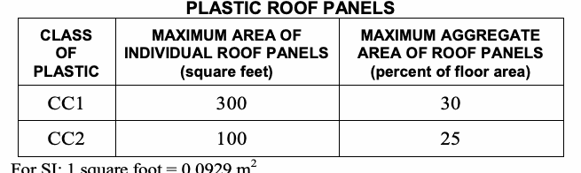

These provisions shall govern the materials, design, application, construction and installation of foam plastic, foam plastic insulation, plastic veneer, interior plastic finish and trim, and light-transmitting plastics. See Chapter 14 for requirements for exterior wall finish and trim.
The following words and terms shall, for the purposes of this chapter and as used elsewhere in this code, have the meanings shown herein.
FIBER REINFORCED POLYMER. A polymeric composite material consisting of reinforcement fibers impregnated with a fiber-binding polymer which is then molded and hardened.
FIBERGLASS REINFORCED POLYMER. A polymeric composite material consisting of glass reinforcement fibers impregnated with a fiber-binding polymer which is then molded and hardened. FOAM PLASTIC INSULATION. A plastic that is intentionally expanded by the use of a foaming agent to produce a reduced-density plastic containing voids consisting of open or closed cells distributed throughout the plastic for thermal insulating or acoustical purposes and that has a density less than 20 pounds per cubic foot (pcf) (320 kg/m3). LIGHT-DIFFUSING SYSTEM. Construction consisting in whole or in part of lenses, panels, grids or baffles made with light-transmitting plastics positioned below independently mounted electrical light sources, skylights or light-transmitting plastic roof panels. Lenses, panels, grids and baffles that are part of an electrical fixture shall not be considered as a light-diffusing system.
LIGHT-TRANSMITTING PLASTIC ROOF PANELS. Structural plastic panels other than skylights that are fastened to structural members, or panels or sheathing, and that are used as light-transmitting media in the plane of the roof.
LIGHT-TRANSMITTING PLASTIC WALL PANELS. Plastic materials that are fastened to structural members, or to structural panels or sheathing, and that are used as light-transmitting media in exterior walls.
PLASTIC, APPROVED. Any thermoplastic, thermosetting or reinforced thermosetting plastic material that conforms to combustibility classifications specified in the section applicable to the application and plastic type. PLASTIC GLAZING. Plastic materials that are glazed or set in frame or sash and not held by mechanical fasteners that pass through the glazing material.
THERMOPLASTIC MATERIAL. A plastic material that is capable of being repeatedly softened by increase of temperature and hardened by decrease of temperature.
THERMOSETTING MATERIAL. A plastic material that is capable of being changed into a substantially nonreformable product when cured.
The provisions of this section shall govern the requirements and uses of foam plastic insulation in buildings and structures.
Packages and containers of foam plastic insulation and foam plastic insulation components delivered to the job site shall bear the label of an approved agency showing the manufacturer's name, the product listing, product identification and information sufficient to determine that the end use will comply with the code requirements.
Unless otherwise indicated in this section, foam plastic insulation and foam plastic cores of manufactured assemblies shall have a flame spread index of not more than 75 and a smoke-developed index of not more than 450 where tested in the maximum thickness intended for use in accordance with ASTM E 84 or UL 723. Loose fill-type foam plastic insulation shall be tested as board stock for the flame spread index and smoke-developed indexes.
Exceptions:
1. Foam plastic interior trim shall comply with the flame spread and smoke-developed indexes as provided for in Section 2604.2.
2. In cold storage buildings, ice plants, food plants, food processing rooms and similar areas, foam plastic insulation where tested in a thickness of 4 inches (102 mm) shall be permitted in a thickness up to 10 inches (254 mm) where the building is equipped throughout with an automatic fire sprinkler system in accordance with Section 903.3.1.1. The approved automatic sprinkler system shall be provided in both the room and that part of the building in which the room is located.
3. Foam plastic insulation that is a part of a Class A, B or C roof-covering assembly shall be exempt from the flame spread requirements of this section provided the assembly with the foam plastic insulation satisfactorily passes FM 4450 or UL
1256. The smoke-developed index shall not be limited for roof applications.
4. Foam plastic insulation greater than 4 inches (102 mm) in thickness shall have a maximum flame spread index of 75 and a smoke-developed index of 450 where tested at a minimum thickness of 4 inches (102 mm), provided the end use is approved in accordance with Section 2603.9 using the thickness and density intended for use.
5. Foam plastic interior signs in covered mall buildings shall not be required to comply with the flame spread and smoke-developed indexes of this section, provided the signs comply with Section 402.16.
Except as provided for in Sections 2603.4.1 and 2603.9, foam plastic shall be separated from the interior of a building by an approved thermal barrier of ½-inch (12.7 mm) gypsum wallboard or equivalent thermal barrier material that will limit the average temperature rise of the unexposed surface to not more than 250°F (120°C) after 15 minutes of fire exposure, complying with the standard time-temperature curve of ASTM E 119 or UL 263. The thermal barrier shall be installed in such a manner that it will remain in place for 15 minutes based on FM 4880, UL 1040, NFPA 286 or UL 1715. Combustible concealed spaces shall comply with Section 717 of this code.
The thermal barrier specified in Section 2603.4 is not required under the conditions set forth in Sections 2603.4.1.1 through 2603.4.1.13.
A thermal barrier is not required for foam plastic insulation installed in a masonry or concrete wall, floor or roof system where the foam plastic insulation is covered on each face by a minimum of 1 inch (25 mm) thickness of masonry or concrete.
Foam plastic installed in a maximum thickness of 10 inches (254 mm) in cooler and freezer walls shall be permitted without thermal barrier, provided that the walls:
1. Have a flame spread index of 25 or less and a smoke-developed index of not more than 450, where tested in a minimum 4-inch (102 mm) thickness.
2. Have flash ignition and self-ignition temperatures of not less than 600°F and 800°F (3 16°C and 427°C), respectively.
3. Have a covering of not less than 0.032-inch (0.8 mm) aluminum or corrosion-resistant steel having a base metal thickness not less than 0.0160 inch (0.4 mm) at any point.
4. Are protected by an automatic sprinkler system in accordance with Section 903.3.1.1. Where the cooler or freezer is within a building, both the cooler or freezer and that part of the building in which it is located shall be sprinklered.
In nonsprinklered buildings, foam plastic having a thickness that does not exceed 4 inches (102 mm) and a maximum flame spread index of 75 is permitted without thermal barrier in walk-in coolers or freezer units where the aggregate floor area does not exceed 400 square feet (37 m2) and the foam plastic is covered by a metal facing not less than 0.032-inch-thick (0.81 mm) aluminum or corrosion-resistant steel having a minimum base metal thickness of 0.016 inch (0.41 mm). A thickness of up to 10 inches (254 mm) is permitted where protected by a thermal barrier.
For one-story buildings, foam plastic having a flame spread index of 25 or less, and a smoke-developed index of not more than 450, shall be permitted without thermal barriers in or on exterior walls in a thickness not more than 4 inches (102 mm) where the foam plastic is covered by a thickness of not less than 0.032-inch-thick (0.81 mm) aluminum or corrosion-resistant steel having a base metal thickness of 0.0160 inch (0.41 mm) and the building is equipped throughout with an automatic sprinkler system in accordance with Section 903.3.1.1.
In construction classes that permit wood sheathing, foam plastic insulation under a roof assembly or roof covering shall be permitted without a thermal barrier, provided that it is installed in accordance with the code and the manufacturer's instructions. It shall be separated from the interior of the building by wood structural panel sheathing not less than 0.47 inch (11.9 mm) in thickness bonded with exterior glue, with edges supported by blocking, tongue-and-groove joints or other approved type of edge support, or an equivalent material. A thermal barrier is not required for foam plastic insulation that is a part of a Class A, B or C roof-covering assembly, provided the assembly with the foam plastic insulation satisfactorily passes FM 4450 or UL 1256.
Within an attic or crawl space where entry is made only for service of utilities, foam plastic insulation shall be permitted without thermal barrier if protected against ignition by 1½-inch-thick (38 mm) mineral fiber insulation; ¼-inch-thick (6.4 mm) wood structural panel, particleboard or hardboard; ⅜-inch (9.5 mm) gypsum wallboard, corrosion-resistant steel having a base metal thickness of 0.016 inch (0.4 mm) or other approved material installed in such a manner that the foam plastic insulation is not exposed. The protective covering shall be consistent with the requirements for the type of construction.
Where pivoted or side-hinged doors are permitted without a fire protection rating, foam plastic insulation, having aflame spread index of 75 or less and a smoke-developed index of not more than 450, shall be permitted as a core material without a thermal barrier where the door facing is of metal having a minimum thickness of 0.032-inch (0.8 mm) aluminum or steel having a base metal thickness of not less than 0.0 16 inch (0.4 mm) at any point.
In occupancies classified as Group R-2 or R-3, foam-filled exterior entrance doors to individual dwelling units that do not require a fire-resistance rating shall be permitted without a thermal barrier, provided that the doors are faced with wood or other approved materials.
Where garage doors are permitted without a fire-resistance rating, foam plastic is permitted as a core material, provided that the door facing shall be metal having a minimum thickness of 0.032-inch (0.8 mm) aluminum or 0.010-inch (0.25 mm) steel or the facing shall be minimum 0.125-inch-thick (3.2 mm) wood. Garage doors having facings other than those described above shall be tested in accordance with, and meet the acceptance criteria of DASMA 107.
Garage doors using foam plastic insulation complying with Section 2603.3 in detached and attached garages associated with one- and two-family dwellings need not be provided with a thermal barrier.
Foam plastic insulation of not more than 2,000 British thermal units per square feet (Btu/sq. ft.) (22.7 mJ/m2) as determined by NFPA 259 shall be permitted as a siding backer board with a maximum thickness of ½ inch (12.7 mm) without a thermal barrier, provided it is separated from the interior of the building by not less than 2 inches (51 mm) of mineral fiber insulation or equivalent or where applied as insulation over existing wall construction.
Foam plastic used as interior trim in accordance with Section 2604 shall be permitted without a thermal barrier.
Foam plastic used for interior signs in covered mall buildings in accordance with Section 402.16 of this code shall be permitted without a thermal barrier. Foam plastic signs that are not affixed to interior building surfaces shall comply with Chapter 8 of the New York City Fire Code.
Foam plastic spray applied to a sill plate and header of Type V construction is permitted without a thermal barrier, subject to all of the following:
1. The maximum thickness of the foam plastic shall be 3¼-inches (82.6 mm).
2. The density of the foam plastic shall be in the range of 1.5 to 2.0 pcf (24 to 32 kg/m3).
3. The foam plastic shall have a flame spread index of 25 or less and an accompanying smoke-developed index of 450 or less when tested in accordance with ASTM E 84 or UL 723.
Exterior walls of buildings of Type I, II, III or IV construction of any height shall comply with Sections 2603.5.1 through 2603.5.7. Exterior walls of cold storage buildings required to be constructed of noncombustible materials, where the building is more than one story in height, shall also comply with the provisions of Sections 2603.5.1 through 2603.5.7. Exterior walls of buildings of Type V construction shall comply with Sections 2603.2, 2603.3 and 2603.4.
Where the wall is required to have a fire-resistance rating, data based on tests conducted in accordance with ASTM E 119 or UL 263 shall be provided to substantiate that the fire-resistance rating is maintained.
Any foam plastic insulation shall be separated from the building interior by a thermal barrier meeting the provisions of Section 2603.4, unless special approval is obtained on the basis of Section 2603.9.
Exception: One-story buildings complying with Section 2603.4.1.4.
The potential heat of foam plastic insulation in any portion of the wall or panel shall not exceed the potential heat expressed in Btu per square feet (mJ/m2) of the foam plastic insulation contained in the wall assembly tested in accordance with Section 2603.5.5. The potential heat of the foam plastic insulation shall be determined by tests conducted in accordance with NFPA 259 and the results shall be expressed in Btu per square feet (mJ/m2).
Exception: One-story buildings complying with Section 2603.4.1.4.
Foam plastic insulation, exterior coatings and facings shall be tested separately in the thickness intended for use, but not to exceed 4 inches (102 mm), and shall each have a flame spread index of 25 or less and a smoke-developed index of 450 or less as determined in accordance with ASTM E 84 or UL 723.
Exception: Prefabricated or factory-manufactured panels having minimum 0.020-inch (0.51 mm) aluminum facings and a total thickness of ¼-inch (6.4mm) or less are permitted to be tested as an assembly where the foam plastic core is not exposed in the course of construction.
The wall assembly shall be tested in accordance with and comply with the acceptance criteria of NFPA 285.
Exception: One-story buildings complying with Section 2603.4.1.4.
The edge or face of each piece of foam plastic insulation shall bear the label of an approved agency. The label shall contain the manufacturer's or distributor's identification, model number, serial number or definitive information describing the product or materials' performance characteristics and approved agency's identification.
Exterior walls shall not exhibit sustained flaming where tested in accordance with NFPA 268. Where a material is intended to be installed in more than one thickness, tests of the minimum and maximum thickness intended for use shall be performed.
Exception: Assemblies protected on the outside with one of the following:
1. A thermal barrier complying with Section 2603.4.
2. A minimum 1-inch (25 mm) thickness of concrete or masonry.
3. Glass-fiber-reinforced concrete panels of a minimum thickness of ⅜-inch (9.5 mm).
4. Metal-faced panels having minimum 0.019-inch-thick (0.48 mm) aluminum or 0.016-inch thick (0.41 mm) corrosion-resistant steel outer facings.
5. A minimum ⅞-inch (22.2 mm) thickness of stucco complying with Section 2510.
Foam plastic insulation meeting the requirements of Sections 2603.2, 2603.3 and 2603.4 shall be permitted as part of a roof-covering assembly, provided the assembly with the foam plastic insulation is a Class A, B or C roofing assembly where tested in accordance with ASTM E 108 or UL 790.
Foam plastic insulation shall not be used as interior wall or ceiling finish in plenums except as permitted in Section 2604 or when protected by a thermal barrier in accordance with Section 2603.4.
In areas where the probability of termite infestation is very heavy in accordance with Figure 2603.8, extruded and expanded polystyrene, polyisocyanurate and other foam plastics shall not be installed on the exterior face or under interior or exterior foundation walls or slab foundations located below grade. The clearance between foam plastics installed above grade and exposed earth shall be at least 6 inches (152 mm).
Exceptions:
1. Buildings where the structural members of walls, floors, ceilings and roofs are entirely of noncombustible materials or preservative-treated wood;
2. An approved method of protecting the foam plastic and structure from subterranean termite damage is provided; or
3. On the interior side of basement walls.
Foam plastic shall not be required to comply with the requirements of Sections 2603.4 through 2603.7, where specifically approved by the department based on large-scale tests such as, but not limited to, NFPA 286 (with the acceptance criteria of Section 803.2 of this code), FM 4880, UL 1040 or UL 1715. Such testing shall be related to the actual end-use configuration and be performed on the finished manufactured foam plastic assembly in the maximum thickness intended for use. Foam plastics that are used as interior finish on the basis of special tests shall also conform to the flame spread requirements of Chapter 8. Assemblies tested shall include seams, joints and other typical details used in the installation of the assembly and shall be tested in the manner intended for use.
Plastic materials installed as interior finish or trim shall comply with Chapter 8. Foam plastics shall only be installed as interior finish where approved in accordance with the special provisions of Section 2603.9. Foam plastics that are used as interior finish shall also meet the flame spread index requirements for interior finish in accordance with Chapter 8. Foam plastics installed as interior trim shall comply with Section 2604.2.
Foam plastic used as interior trim shall comply with Sections 2604.2.1 through 2604.2.4.
The minimum density of the interior trim shall be 20 pcf (320 kg/m3).
The maximum thickness of the interior trim shall be ½-inch (12.7 mm) and the maximum width shall be 8 inches (204 mm).
The interior trim shall not constitute more than 10 percent of the specific wall or ceiling area to which it is attached.
The flame spread index shall not exceed 75 where tested in accordance with ASTM E 84 or UL 723. The smoke-developed index shall not be limited.
Exception: When the interior trim material has been tested as an interior finish in accordance with NFPA 286 and complies with the acceptance criteria in Section 803.1.2.1 of this code, it shall not be required to be tested for flame spread index in accordance with ASTM E 84 or UL 723.
Where used within a building, plastic veneer shall comply with the interior finish requirements of Chapter 8.
Exterior plastic veneer, other than plastic siding, shall be permitted to be installed on the exterior walls of buildings of any type of construction in accordance with all of the following requirements:
1. Plastic veneer shall comply with Section 2606.4.
2. Plastic veneer shall not be attached to any exterior wall to a height greater than 50 feet (15 240 mm) above grade.
3. Sections of plastic veneer shall not exceed 300 square feet (27.9 m2) in area and shall be separated by a minimum of 4 feet (1219 mm) vertically.
Exception: The area and separation requirements and the smoke-density limitation are not applicable to plastic veneer applied to buildings constructed of Type VB construction, provided the walls are not required to have a fire-resistance rating.
Plastic siding shall comply with the requirements of Sections 1404 and 1405.
The provisions of this section and Sections 2607 through 2611 shall govern the quality and methods of application of light-transmitting plastics for use as light-transmitting materials in buildings and structures. Foam plastics shall comply with Section 2603. Light-transmitting plastic materials that meet the other code requirements for walls and roofs shall be permitted to be used in accordance with the other applicable chapters of the code.
Sufficient technical data shall be submitted to substantiate the proposed use of any light-transmitting material, as approved by the department and subject to the requirements of this section.
Each unit or package of light-transmitting plastic shall be identified with a mark or decal satisfactory to the commissioner, which includes identification as to the material classification.
Light-transmitting plastics, including thermoplastic, thermosetting or reinforced thermosetting plastic material, shall have a self-ignition temperature of 650°F (343°C) or greater where tested in accordance with ASTM D 1929; a smoke-developed index not greater than 450 where tested in the manner intended for use in accordance with ASTM E 84 or UL 723, or a maximum average smoke density rating not greater than 75 where tested in the thickness intended for use in accordance with ASTM D 2843 and shall conform to one of the following combustibility classifications:
Class CC1: Plastic materials that have a burning extent of 1 inch (25 mm) or less where tested at a nominal thickness of 0.060 inch (1.5 mm), or in the thickness intended for use, in accordance with ASTM D 635.
Class CC2: Plastic materials that have a burning rate of 2½-inches per minute (1.06 mm/s) or less where tested at a nominal thickness of 0.060 inch (1.5 mm), or in the thickness intended for use, in accordance with ASTM D 635.
Light-transmitting plastic materials in their assembly shall be of adequate strength and durability to withstand the loads indicated in Chapter 16. Technical data shall be submitted to establish stresses, maximum unsupported spans and such other information for the various thicknesses and forms used as deemed necessary by the department.
Fastening shall be adequate to withstand the loads in Chapter 16. Proper allowance shall be made for expansion and contraction of light-transmitting plastic materials in accordance with accepted data on the coefficient of expansion of the material and other material in conjunction with which it is employed.
Light-diffusing systems shall comply with Sections 2603.7.1 through 2603.7.5. Light-diffusing systems shall not be installed in the following occupancies and locations:
1. Any room in which the net floor area per occupant is 20 square feet (1.86 m2) or less, or any room leading therefrom through which it is necessary for occupants to pass in order to reach the only exit.
2. Group I-2.
3. Group I-3.
4. Vertical exit enclosures and exit passageways.
Light-transmitting plastic diffusers shall be supported directly or indirectly from ceiling or roof construction by use of noncombustible hangers. Hangers shall be at least No. 12 steel-wire gage (0.106 inch) galvanized wire or equivalent.
Exception: Light-transmitting plastic diffusers used in suspended acoustical ceiling systems shall conform with the support requirements as set forth in Section 803.9.
Light-transmitting plastic diffusers shall comply with Chapter 8 unless the light-transmitting plastic diffusers will fall from the mountings before igniting, at an ambient temperature of at least 200°F (111°C) below the ignition temperature of the panels. The panels shall remain in place at an ambient room temperature of 175°F (79°C) for a period of not less than 15 minutes.
Individual panels or units shall not exceed 10 feet (3048 mm) in length nor 30 square feet (2.79 m2) in area.
In buildings that are equipped throughout with an automatic sprinkler system in accordance with Section 903.3.1.1, plastic light-diffusing systems shall be protected both above and below unless the sprinkler system has been specifically approved for installation only above the light-diffusing system. Areas of light-diffusing systems that are protected in accordance with this section shall not be limited.
Light-transmitting plastic panels and light-diffuser panels that are installed in approved electrical luminaires shall comply with the requirements of Chapter 8 unless the light-transmitting plastic panels conform to the requirements of Section 2606.7.2.
Light-transmitting plastics used in or as partitions shall comply with the requirements of Chapters 6 and 8.
Light-transmitting plastics shall be permitted as glazing in shower stalls, shower doors, bathtub enclosures and similar accessory units. Safety glazing shall be provided in accordance with Chapter 24.
Awnings constructed of light-transmitting plastics shall be constructed in accordance with provisions specified in Section 3105 and Chapter 32 for projections. Patio covers constructed of light-transmitting plastics shall comply with Section 2606. Light-transmitting plastics used in canopies at motor fuel-dispensing facilities shall comply with Section 2606 except as modified by Section 406.5.3.
Light-transmitting plastics shall be permitted in lieu of plain glass in greenhouses.
Light-transmitting plastic covers on solar collectors having noncombustible sides and bottoms shall be permitted on buildings not over three stories above grade plane or 9,000 square feet (836.1 m2) in total floor area, provided the light-transmitting plastic cover does not exceed 33.33 percent of the roof area for CC 1 materials or 25 percent of the roof area for CC2 materials.
Exception: Light-transmitting plastic covers having a thickness of 0.0 10 inch (0.3 mm) or less or shall be permitted to be of any plastic material provided the area of the solar collectors does not exceed 33.33 percent of the roof area.
Light-transmitting plastics shall be permitted to be used as wall panels in exterior walls, provided that the walls are not required to have a fire-resistance rating and the installation conforms to the requirements of this section. Such panels shall be erected and anchored on a foundation, waterproofed or otherwise protected from moisture absorption and sealed with a coat of mastic or other approved waterproof coating. Light-transmitting plastic wall panels shall also comply with Section 2606.
Exception: Light-transmitting plastics shall not be used as wall panels in exterior walls in occupancies in Groups A-l, A-2, H, I-2 and I-3.
Exterior wall panels installed as provided for herein shall not alter the type of construction classification of the building.
Light-transmitting plastics shall not be installed more than 75 feet (22 860mm) above grade plane, except as allowed by Section 2607.5.
The maximum area of a single wall panel and minimum vertical and horizontal separation requirements for exterior light-transmitting plastic wall panels shall be as provided for in Table 2607.4. The maximum percentage of wall area of any story in light-transmitting plastic wall panels shall not exceed that indicated in Table 2607.4 or the percentage of unprotected openings permitted by Section 705.8, whichever is smaller.
Exceptions:
1. In structures provided with approved flame barriers extending 30 inches (760 mm) beyond the exterior wall in the plane of the floor, a vertical separation is not required at the floor except that provided by the vertical thickness of the flame barrier projection.
2. Veneers of approved weather-resistant light-transmitting plastics used as exterior siding in buildings of Type V construction in compliance with Section 1406.
3. The area of light-transmitting plastic wall panels in exterior walls of greenhouses shall be exempt from the area limitations of Table 2607.4 but shall be limited as required for unprotected openings in accordance with Section 705.8.
| FIRE SEPARATION DISTANCE (feet) | CLASS OF PLASTIC | MAXIMUM PERCENTAGE AREA OF EXTERIOR WALL IN PLASTIC WALL PANELS | MAXIMUM SINGLE AREA OF PLASTIC WALL PANELS (square feet) | MINIMUM SEPARATION OF PLASTIC WALL PANELS (feet) | |
|---|---|---|---|---|---|
| Vertical | Horizontal | ||||
| Less than 6 | ⎯ | Not Permitted | Not Permitted | ⎯ | ⎯ |
| 6 or more but less than 11 | CC1 | 10 | 50 | 8 | 4 |
| CC2 | Not Permitted | Not Permitted | ⎯ | ⎯ | |
| 11 or more but less than or equal to 30 | CC1 | 25 | 90 | 6 | 4 |
| CC2 | 15 | 70 | 8 | 4 | |
| Over 30 | CC1 | 50 | Not Limited | 3b | 0 |
| CC2 | 50 | 100 | 6b | 3 |
For SI: 1 foot = 304.8 mm, 1 square foot = 0.0929 m2.
a. For combinations of plastic glazing and plastic wall panel areas permitted, see Section 2607.6.
b. For reductions in vertical separation allowed, see Section 2607.4. SECTION BC 2609 LIGHT-TRANSMITTING PLASTIC ROOF PANELS
Where the building is equipped throughout with an automatic sprinkler system in accordance with Section 903.3.1.1, the maximum percentage area of exterior wall in any story in light-transmitting plastic wall panels and the maximum square footage of a single area given in Table 2607.4 shall be increased 100 percent, but the area of light-transmitting plastic wall panels shall not exceed 50 percent of the wall area in any story, or the area permitted by Section 705.8 for unprotected openings, whichever is smaller. These installations shall be exempt from height limitations.
Combinations of light-transmitting plastic glazing and light-transmitting plastic wall panels shall be subject to the area, height and percentage limitations and the separation requirements applicable to the class of light-transmitting plastic as prescribed for light-transmitting plastic wall panel installations.
Openings in the exterior walls of buildings of Type VB construction, where not required to be protected by Section 705, shall be permitted to be glazed or equipped with light-transmitting plastic. Light-transmitting plastic glazing shall also comply with Section 2606.
Openings in the exterior walls of buildings of types of construction other than Type VB, where not required to be protected by Section 705, shall be permitted to be glazed or equipped with light transmitting plastic in accordance with Section 2606 and all of the following:
1. The aggregate area of light-transmitting plastic glazing shall not exceed 25 percent of the area of any wall face of the story in which it is installed. The area of a single pane of glazing installed above the first story above grade plane shall not exceed 16 square feet (1.5 m2) and the vertical dimension of a single pane shall not exceed 4 feet (1219 mm).
Exception: Where an automatic sprinkler system is provided throughout in accordance with Section 903.3.1.1, the area of allowable glazing shall be increased to a maximum of 50 percent of the wall face of the story in which it is installed with no limit on the maximum dimension or area of a single pane of glazing.
2. Approved flame barriers extending 30 inches (762 mm) beyond the exterior wall in the plane of the floor, or approved vertical panels not less than 4 feet (1219 mm) in height, shall be installed between glazed units located in adjacent stories.
Exception: Approved vertical panels not less than 3 feet (914 mm) in height or flame barriers extending 30 inches (762 mm) beyond the exterior wall shall be installed between glazed units located in adjacent stories in buildings equipped throughout with an automatic sprinkler system in accordance with Section 903.3.1.1.
3. Light-transmitting plastics shall not be installed more than 75 feet (22 860 mm) above grade level.
Exception: Buildings equipped throughout with an automatic sprinkler system in accordance with Section 903.3.1.1.
Light-transmitting plastic roof panels shall comply with this section and Section 2606. Light-transmitting plastic roof panels shall not be installed in Groups H, I-2 and I-3. In all other groups, light-transmitting plastic roof panels shall comply with any one of the following conditions:
1. The building is equipped throughout with an automatic sprinkler system in accordance with Section 903.3.1.1.
2. The roof construction is not required to have a fire-resistance rating by Table 601.
3. The roof panels meet the requirements for roof coverings in accordance with Chapter 15.
Individual roof panels shall be separated from each other by a distance of not less than 4 feet (1219 mm) measured in a horizontal plane.
Exceptions:
1. The separation between roof panels is not required in a building equipped throughout with an automatic sprinkler system in accordance with Section 903.3.1. 1.
2. The separation between roof panels is not required in low-hazard occupancy buildings complying with the conditions of Section 2609.4, Exception 2 or 3.
Where exterior wall openings are required to be protected by Section 705.8, a roof panel shall not be installed within 6 feet (1829 mm) of such exterior wall.
Roof panels shall be limited in area and the aggregate area of panels shall be limited by a percentage of the floor area of the room or space sheltered in accordance with Table 2609.4.
Exceptions:
1. The area limitations of Table 2609.4 shall be permitted to be increased by 100 percent in buildings equipped throughout with an automatic sprinkler system in accordance with Section 903.3.1.1.
2. Low-hazard occupancy buildings, such as swimming pool shelters, shall be exempt from the area limitations of Table 2609.4, provided that the buildings do not exceed 5,000 square feet (465 m2) in area and have a minimum fire separation distance of 10 feet (3048 mm).
3. Greenhouses that are occupied for growing plants on a production or research basis, without public access, shall be exempt from the area limitations of Table 2609.4 provided they have a minimum fire separation distance of 4 feet (1219mm).
4. Roof coverings over terraces and patios in Group R-3 occupancies shall be exempt from the area limitations of Table 2609.4.

Skylight assemblies glazed with light-transmitting plastic shall conform to the provisions of this section and Section 2606. Unit skylights glazed with light-transmitting plastic shall also comply with Section 2405.5.
Exception: Skylights in which the light-transmitting plastic conforms to the required roof-covering class in accordance with Section 1505.
The light-transmitting plastic shall be mounted above the plane of the roof on a curb constructed in accordance with the requirements for the type of construction classification, but at least 4 inches (102mm) above the plane of the roof. Edges of light-transmitting plastic skylights or domes shall be protected by metal or other approved noncombustible material, or the light-transmitting plastic dome or skylight shall be shown to be able to resist ignition where exposed at the edge to a flame from a Class B brand as described in ASTM E 108 or UL 790.
Exceptions:
1. Curbs shall not be required for skylights used on roofs having a minimum slope of three units vertical in 12 units horizontal (25-percent slope) in occupancies in Group R-3 and on buildings with a nonclassified roof covering.
2. The metal or noncombustible edge material is not required where nonclassified roof coverings are permitted.
Flat or corrugated light-transmitting plastic skylights shall slope at least four units vertical in 12 units horizontal (4:12). Dome-shaped skylights shall rise above the mounting flange a minimum distance equal to 10 percent of the maximum span of the dome but not less than 3 inches (76mm).
Exception: Skylights that pass the Class B Burning Brand Test specified in ASTM E 108 or UL 790 shall have no minimum slope requirement.
Each skylight shall have a maximum area within the curb of 100 square feet (9.3 m2).
Exception: The area limitation shall not apply where the building is equipped throughout with an automatic sprinkler system in accordance with Section 903.3.1.1 or the building is equipped with smoke and heat vents in accordance with Section 910.
The aggregate area of skylights shall not exceed 33 1/3 percent of the floor area of the room or space sheltered by the roof in which such skylights are installed where Class CC1 materials are utilized, and 25 percent where Class CC2 materials are utilized.
Exception: The aggregate area limitations of light-transmitting plastic skylights shall be increased 100 percent beyond the limitations set forth in this section where the building is equipped throughout with an automatic sprinkler system in accordance with Section 903.3.1.1 or the building is equipped with smoke and heat vents in accordance with Section 910.
Skylights shall be separated from each other by a distance of not less than 4 feet (1219 mm) measured in a horizontal plane.
Exceptions:
1. Buildings equipped throughout with an automatic sprinkler system in accordance with Section 903.3.1.1.
2. In Group R-3, multiple skylights located above the same room or space with a combined area not exceeding the limits set forth in Section 2610.4.
Where exterior wall openings are required to be protected in accordance with Section 705, a skylight shall not be installed within 6 feet (1829 mm) of such exterior wall.
Combinations of light-transmitting plastic roof panels and skylights shall be subject to the area and percentage limitations and separation requirements of Section 2609 applicable to roof panel installations.
Light-transmitting plastic interior wall signs shall be limited as specified in Sections 2611.2 through 2611.4. Light-transmitting plastic interior wall signs in covered mall buildings shall comply with Section 402.16. Light-transmitting plastic interior signs shall also comply with Section 2606.
The sign shall not exceed 20 percent of the wall area.
The sign shall not exceed 24 square feet (2.2 m2).
Edges and backs of the sign shall be fully encased in metal.
FIBERGLASS REINFORCED POLYMER
The provisions of this section shall govern the requirements and uses of fiber reinforced polymer or fiberglass reinforced polymer in and on buildings and structures.
Packages and containers of fiber reinforced polymer or fiberglass reinforced polymer and their components delivered to the job site shall bear the label of an approved agency showing the manufacturer’s name, product listing, product identification and information sufficient to determine that the end use will comply with the code requirements.
Fiber reinforced polymer or fiberglass reinforced polymer used as interior finish shall comply with Chapter 8.
Fiber reinforced polymer or fiberglass reinforced polymer used as decorative materials or trim shall comply with Section 806.
Fiber reinforced polymer or fiberglass reinforced polymer used as light-transmitting materials shall comply with Sections 2606 through 2611 as required for the specific application.
Fiber reinforced polymer or fiberglass reinforced polymer shall be permitted to be installed on the exterior walls of buildings of any type of construction when such polymers meet the requirements of Section 2603.5 and is fireblocked in accordance with Section 717. The fiber reinforced polymer or the fiberglass reinforced polymer shall be designed for uniform live loads as required in Table 1607.1 as well as for snow loads, wind loads and earthquake loads as specified in Sections 1608, 1609 and 1613, respectively.
Exceptions:
1. When all of the following conditions are met: 1.1. When the area of the fiber reinforced polymer or the fiberglass reinforced polymer does not exceed 20 percent of the respective wall area, the fiber reinforced polymer or the fiberglass reinforced polymer shall have a flame spread index of 25 or less or when the area of the fiber reinforced polymer or the fiberglass reinforced polymer does not exceed 10 percent of the respective wall area, the fiber reinforced polymer or the fiberglass reinforced polymer shall have a flame spread index of 75 or less. The flame spread index requirement shall not be required for coatings or paints having a thickness of less than 0.036 inch (0.9 mm) that are applied directly to the surface of the fiber reinforced polymer or the fiberglass reinforced polymer.
1.2. Fireblocking complying with Section 717.2.6 shall be installed.
1.3. The fiber reinforced polymer or the fiberglass reinforced polymer shall be installed directly to a noncombustible substrate or be separated from the exterior wall by one of the following materials: corrosion-resistant steel having a minimum base metal thickness of 0.016 inch (0.41 mm) at any point, aluminum having a minimum thickness of 0.019 inch (0.5mm) or other approved noncombustible material.
1.4. The fiber reinforced polymer or the fiberglass reinforced polymer shall be designed for uniform live loads as required in Table 1607.1 as well as for snow loads, wind loads and earthquake loads as specified in Sections 1608, 1609 and 1613, respectively.
2. When installed on buildings that are 40 feet (12 190 mm) or less above grade, the fiber reinforced polymer or the fiberglass reinforced polymer shall meet the requirements of Section 1406.2 and shall comply with all of the following conditions: 2.1. Where the fire separation distance is 5 feet (1524 mm) or less, the area of the fiber reinforced polymer or the fiberglass reinforced polymer shall not exceed 10 percent of the wall area. Where the fire separation distance is greater than 5 feet (1524mm), there shall be no limit on the area of the exterior wall coverage using fiber reinforced polymer or the fiberglass reinforced polymer.
2.2. The fiber reinforced polymer or the fiberglass reinforced polymer shall have a flame spread index of 200 or less. The flame spread index requirement shall not be required for coatings or paints having a thickness of less than 0.036 inch (0.9 mm) that are applied directly to the surface of the fiber reinforced polymer or the fiberglass reinforced polymer.
2.3. Fireblocking complying with Section 717.2.6 shall be installed.
2.4. The fiber reinforced polymer or the fiberglass reinforced polymer shall be designed for uniform live loads as required in Table 1607.1 as well as for snow loads, wind loads and earthquake loads as specified in Sections 1608, 1609 and 1613, respectively.
The provisions of this section shall govern the requirements and uses of reflective plastic core insulation in buildings and structures. Reflective plastic core insulation shall comply with the requirements of Section 2613.2 and of one of the following: Section 2613.3 or 2613.4.
Packages and containers of reflective plastic core insulation delivered to the job site shall show the manufacturer’s or supplier’s name, product identification and information sufficient to determine that the end use will comply with the code requirements.
Reflective plastic core insulation shall have a flame spread index of not more than 25 and a smoke-developed index of not more than 450 when tested in accordance with ASTM E 84 or UL 723. The reflective plastic core insulation shall be tested at the maximum thickness intended for use and shall be tested using one of the mounting methods in Section 2613.3.1 or 2613.3.2.
The test specimen shall be mounted on 2-inch-high (51 mm) metal frames so as to create an air space between the unexposed face of the reflective plastic core insulation and the lid of the test apparatus.
A set of specimen preparation and mounting procedures shall be used which are specific to the testing of reflective plastic core insulation.
Reflective plastic core insulation shall comply with the acceptance criteria of Section 803.1.2.1 of this code when tested in accordance with NFPA 286 or UL 1715 in the manner intended for use and at the maximum thickness intended for use.